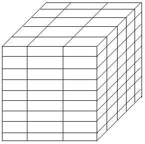

Многомерные массивы
Мы уже научились работать со статическими и с динамическими массивами, однако все эти массивы были одномерными.
Посмотрите пример:
a : array [0..9] of String;
Здесь мы объявили массив строк из 10 элементов.
Этот массив можно представить в виде таблицы с десятью колонками и одной строкой:
| 1 | 2 | 3 | 4 | 5 | 6 | 7 | 8 | 9 | 10 |
А как быть, если нам нужно обработать таблицу с более чем одной строкой?
Тут на помощь приходят многомерные массивы.
Чтобы объявить массив из 10 колонок и 5 строк, мы делаем такое объявление:
a : array [0..4, 0..9] of string;
Как видите, вначале задается диапазон индексов строк, затем через запятую диапазон индексов столбцов.
Работа с такими массивами ничем не отличается от одномерных массивов, только в качестве индекса придется указывать сразу два элемента – строку и столбец.
Например, код
a[1][0] := 'Строка';
присвоит строку "Строка" второй строке первого столбца (не забывайте, что нижним индексом мы объявили ноль).
Можно воспользоваться и другим вариантом адресации:
a[1, 0] := 'Строка';
Оба эти варианта идентичны и сделают одно и то же – присвоят второй строке и первому столбцу строку "Строка".
В дальнейшем мы можем вызвать эту строку, например, таким образом:
ShowMessage(a[1,0]);
Однако, для Delphi двухмерные массивы – не предел.
Можно объявлять и трехмерные, и четырехмерные, и сколько угодно мерные, вот только обрабатывать такие массивы будет сложней с каждой новой размерностью.
Давайте посмотрим пример присвоения всем элементам одномерного массива какой-то строки:
var
a : array [0..9] of string;
i : Integer;
s : string;
begin
for i := 0 to 9 do begin
a[i] := 'Строка №'+IntToStr(i);
s := s + a[i]+#13+#10;
end; //for
ShowMessage(s);
end; //конец процедуры
В данном примере, с помощью цикла for мы в элемент массива a[i] присваивали строку "Строка №0", причем номер строки менялся при каждом проходе цикла.
Затем полученную строку мы добавляли в строковую переменную s, также добавляли и символы перехода на новую строку, чтобы в конце вывести все это с помощью ShowMessage().
Попробуйте сделать новое приложение с одной кнопкой на форме, и присвойте этот код обработке кнопки.
Теперь рассмотрим такой же пример, но уже для двухмерного массива:
var
a : array [0..9, 0..4] of string;
i,j : Integer;
s : string;
begin
for i := 0 to 9 do
for j := 0 to 4 do begin
a[i, j] := 'Строка №'+IntToStr(i)+
' Столбец №'+IntToStr(j);
s := s + a[i,j]+#13+#10;
end; //for 2
ShowMessage(s);
end; //конец процедуры
Как видите, теперь нам приходится использовать два цикла for – один для строк, и один для столбцов.
Вначале выполняется цикл для первой строки, и управление передается на вложенный цикл.
Там происходит обработка массива от первого до последнего столбца первой строки.
Потом программа возвращается в первый цикл, прибавляет к счетчику единицу и происходит такая же обработка для второй строки, от первого до последнего столбца.
И так далее, пока не будет обработан последний столбец последней строки!
Трехмерные массивы обрабатывать еще сложней.
Такая таблица будет выглядеть уже как кубическая:
Объявляться такой массив будет уже так:
a : array [0..9, 0..4, 0..7] of string;
И для его циклической обработки потребуется уже три цикла for!
Как будет выглядеть четырехмерный массив, графическим образом вообще невозможно описать.
Несмотря на то, что у вас есть возможность работать хоть с десятимерным массивом, надобность более, чем в трехмерном в практике программиста почти не встречается, а чаще всего приходится работать с одно- и двухмерными массивами.